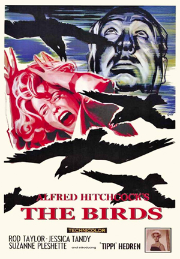

Melanie Daniels is the modern rich socialite, part of the jet-set who always gets what she wants. When lawyer Mitch Brenner sees her in a pet shop, he plays something of a practical joke on her, and she decides to return the favor. She drives about an hour north of San Francisco to Bodega Bay, where Mitch spends the weekends with his mother Lydia and younger sister Cathy. Soon after her arrival, however, the birds in the area begin to act strangely. A seagull attacks Melanie as she is crossing the bay in a small boat, and then, Lydia finds her neighbor dead, obviously the victim of a bird attack. Soon, birds in the hundreds and thousands are attacking anyone they find out of doors. There is no explanation as to why this might be happening, and as the birds continue their vicious attacks, survival becomes the priority.
.